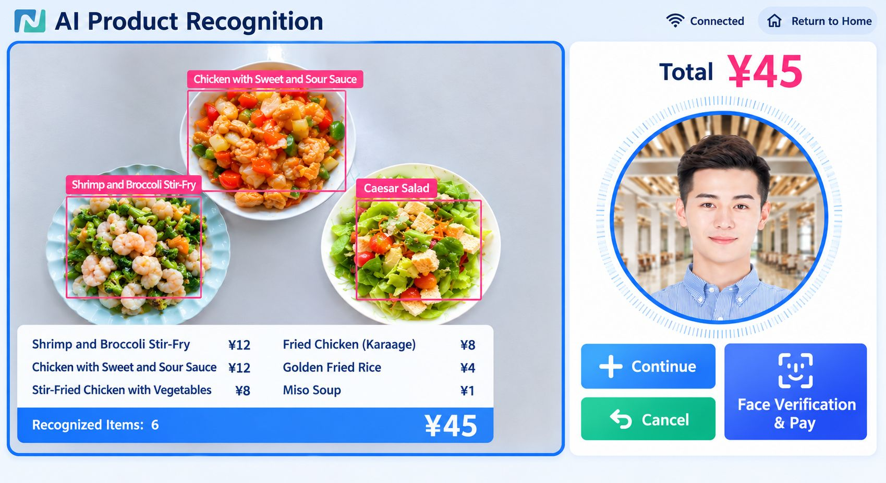
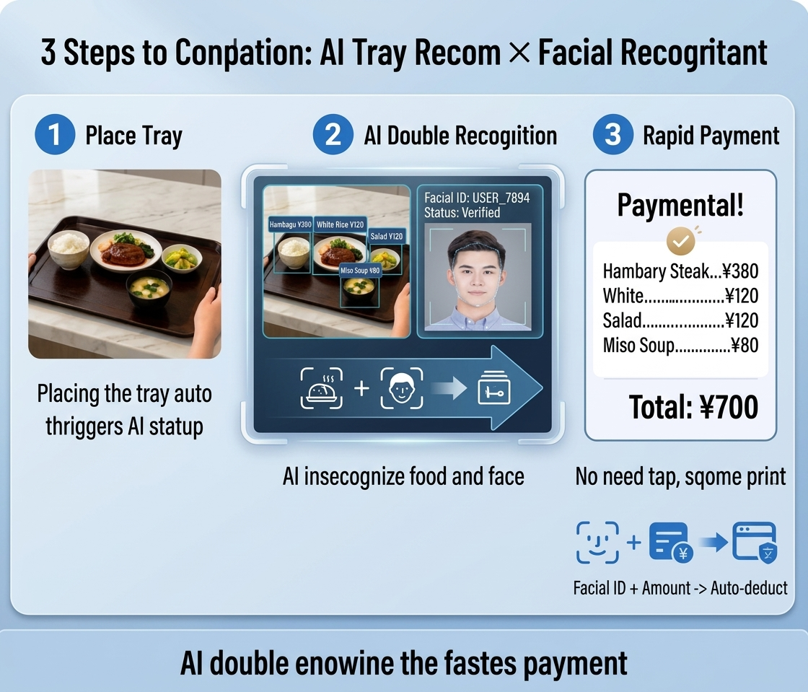
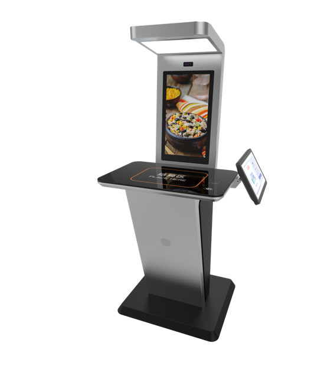
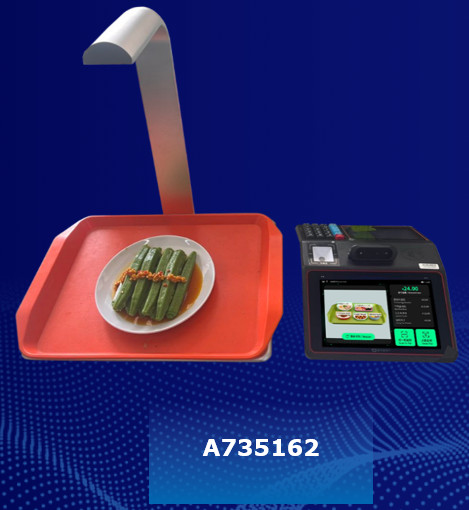
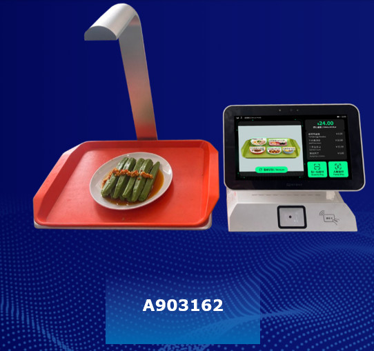

AI Instantly Identifies Every Dish.
Recognizes dishes and faces simultaneously for the fastest checkout.
AI cameras automatically recognize dishes on the tray, instantly calculating items and totals — no special dishware needed.

How AI Image Recognition Works
Simply place the tray and dishes are automatically recognized. Dish recognition and face recognition run simultaneously for the fastest checkout.
Recognizes dishes and faces simultaneously for the industry's fastest checkout.
Just 3 seconds from placing the tray to completed payment!

AI Checkout Terminal Lineup
Choose from four models to match your cafeteria's scale and layout.

AI Checkout Terminal (Wide Type)
High-throughput model with two recognition zones.
Designed for large cafeterias and peak-hour high-volume processing.
- Dual 15.6-inch touchscreen displays
- Recognizes 8+ items simultaneously
- Recognition complete within 1 second
- IC card / QR code / face recognition

AI Checkout Terminal (Compact Type)
Compact, slim kiosk design.
Ideal for small to mid-size cafeterias or spaces with limited room.
- 21.6-inch main display + side panel
- Compact design saves space
- Flexible placement — fits anywhere
- IC card / QR code / face recognition

AI Checkout Terminal (New Model 1)
Compact model with an 8-inch touchscreen.
Integrates face recognition, QR, and card payment in one unit.
- 8-inch touchscreen
- Integrated face camera / QR / card reader
- WiFi / Bluetooth / wired LAN
- 2MP infrared binocular camera
- 5MP dish recognition camera

AI Checkout Terminal (New Model 2)
Compact model with an 11.6-inch touchscreen.
Integrates face recognition, QR, and card payment in one unit.
- 11.6-inch touchscreen
- Integrated face camera / QR / card reader
- WiFi / Bluetooth / wired LAN
- 2MP infrared binocular camera
- 5MP dish recognition camera
Key Features
No Special Dishware
Use your existing dishes as-is — no need to replace them with dedicated dishware. Dramatically reduces implementation costs.
High-Speed Recognition
Recognizes dishes and calculates totals in approximately 1 second. Significantly reduces peak-hour checkout lines and user stress.
Nutrition Analysis
Automatically calculates nutritional data (calories, sodium, protein, etc.) for each meal. Supports employee health management.
PC Management Platform
Centralized web-based management for products, orders, sales analytics, and equipment. Dramatically improves operational efficiency.
Multiple Payment Options
Supports face recognition, QR code, and IC card payments. Enables hygienic and efficient cashless operations.
Data Utilization
Leverage accumulated data — sales, menu popularity, peak-hour analysis — to continuously improve cafeteria operations.
Technical Specifications
Key specifications for the AI Checkout Terminal
| Item | Specification |
|---|---|
| CPU | 64-bit 8-core CPU, 6T NPU |
| Storage | 16G FLASH, 4G DDR4 |
| Display | Main: 15.6" 1080P touchscreen / Sub: 15.6" 1080P touchscreen |
| QR Scanner | QR Code, Code 128/39, etc. — 360° rotation reading |
| Face Recognition Camera | Dual infrared camera, 2MP |
| Dish Recognition Camera | 5MP |
| Contactless Card | M1/CPU card, ISO/IEC14443 compliant |
| Communication | Ethernet 10/100Mbps, WiFi 2.4GHz, Bluetooth 4.0 |
| Power | AC220V input, DC12V/5A output |
| Operating Environment | -10℃ to 50℃, humidity 10–93% |
| Dimensions | 1475 × 650 × 1100mm |
Implementation Benefits
Reduced Cashier Staff
Save 1–2 staff members per checkout lane. Helps alleviate chronic labor shortages.
Faster Checkout
Dramatically shortens peak-hour lines, allowing employees to make the most of their lunch breaks.
Zero Billing Errors
AI-powered auto-calculation eliminates human errors, ensuring accurate billing every time.
Reduced Food Waste
Data-driven meal planning enables accurate preparation, reducing food waste and environmental impact.
Experience AI Checkout in Action
Considering AI image recognition checkout for your cafeteria?
Contact us for a free demo, POC consultation, or to request materials.